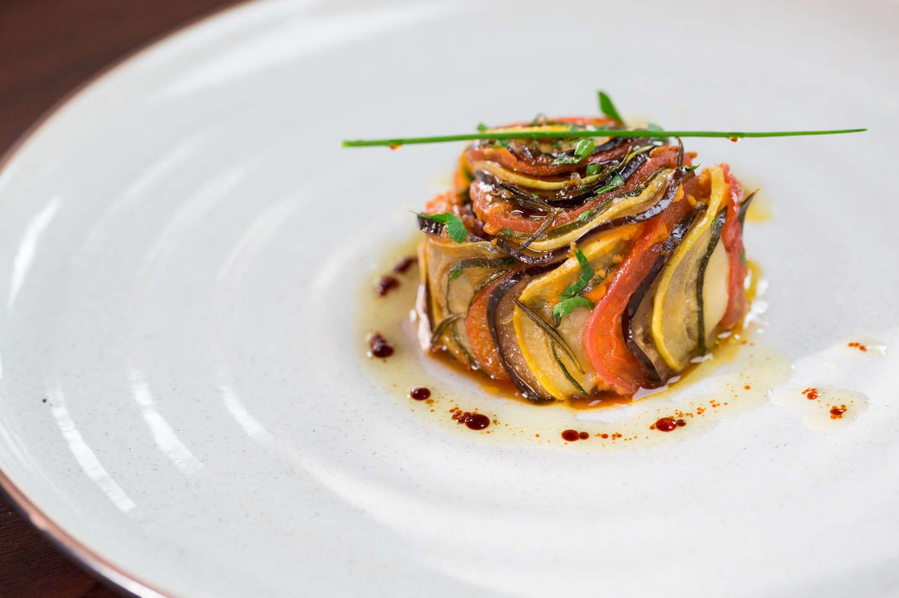

Ratatouille

The beautiful ratatouille served up in the movie by the same name. Long and narrow vegetables work best. Serve
over a
bed of brown rice, couscous, pasta or other starch, or with crusty bread.
Ingredients
- (6 ounce) can tomato paste
- ½ onion, chopped
- ¼ cup minced garlic
- tablespoon olive oil
- ¾ cup water
- salt and ground black pepper to taste
- small eggplant, trimmed and very thinly sliced
- zucchini, trimmed and very thinly sliced
- yellow squash, trimmed and very thinly sliced
- red bell pepper, cored and very thinly sliced
- yellow bell pepper, cored and very thinly sliced
- 3 tablespoons olive oil, or to taste
- teaspoon fresh thyme leaves, or to taste
- 3 tablespoons mascarpone cheese
Steps
-
Preheat the oven to 375 degrees F (190 degrees C).
-
Spread tomato paste into the bottom of a 10x10-inch baking dish. Sprinkle with onion and garlic and stir in
1 tablespoon
olive oil and water until thoroughly combined. Season with salt and black pepper.
-
Arrange alternating slices of eggplant, zucchini, yellow squash, red bell pepper, and yellow bell pepper,
starting at
the outer edge of the dish and working concentrically towards the center. Overlap the slices a little to
display the
colors. Drizzle the vegetables with 3 tablespoons olive oil and season with salt and black pepper. Sprinkle
with thyme
leaves. Cover vegetables with a piece of parchment paper cut to fit inside.
-
Bake in the preheated oven until vegetables are roasted and tender, about 45 minutes. Serve with dollops of
mascarpone
cheese.
Back to main page